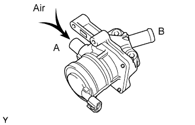
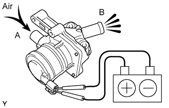
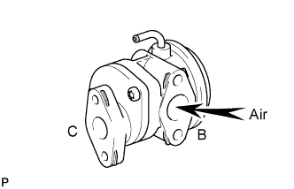
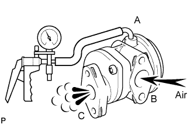
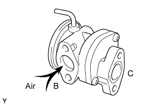
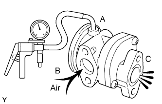

AIR SWITCHING VALVE (w/ Secondary Air Injection System) > INSPECTION |
| 1. INSPECT AIR SWITCHING VALVE ASSEMBLY |
 |
Measure the resistance of the valve.
Measure the resistance according to the value(s) in the table below.
| Tester Connection | Condition | Specified Condition |
| 1- 2 | 20°C (68°F) | 4.5 to 5.5 Ω |
| 1 - Body ground | Always | 1 MΩ or higher |
| 2 - Body ground | Always | 1 MΩ or higher |
Check the valve operation.
 |
Blow air into port A and check that air is not discharged from port B.
 |
Apply battery voltage across the terminals.
Blow air into port A and check that air is discharged from port B.
If the result is not as specified, replace the air switching valve assembly.
| 2. INSPECT NO. 1 AIR SWITCHING VALVE ASSEMBLY |
 |
Blow air into port B and check that air is not discharged from port C.
 |
Apply vacuum of 33 kPa (250 mmHg, 9.83 in.Hg) to port A, blow air into port B and check that air is discharged from port C.
If the result is not as specified, replace the No. 1 air switching valve assembly.
| 3. INSPECT NO. 2 AIR SWITCHING VALVE ASSEMBLY |
 |
Blow air into port B and check that air is not discharged from port C.
 |
Apply vacuum of 33 kPa (250 mmHg, 9.83 in.Hg) to port A, blow air into port B and check that air is discharged from port C.
If the result is not as specified, replace the No. 2 air switching valve assembly.